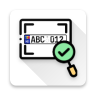

<mat-toolbar color="primary" class="mat-elevation-z8 header">
 

  <span>ALPR</span>

  <div class="spacer"></div>

  <app-navigation></app-navigation>

  <div *ngIf="user !== null" style="margin: 1em">
    <a mat-raised-button color="accent" (click)="logout()">Log Out</a>
  </div>
</mat-toolbar>
